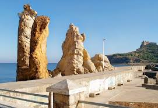

On choisit Tabarka pour son site exceptionnel, entre mer et montagne. Les plages de sable blanc sont encadrées d’éperons rocheux, de bois de pins et de chênes-lièges. La mer cristalline dissimule dans ses profondeurs le précieux corail rouge. La silhouette caractéristique du Fort Génois, perché sur un îlot, est l’emblème de la Tabarka. L’arrière-pays montagneux est la promesse de fantastiques excursions et randonnées autour du village d’Aïn Draham, point de départ d’un vaste massif forestier.
Le centre-ville de Tabarka a gardé un air désuet de petite ville coloniale. Prenez un rafraîchissement au Café des Andalous, café maure situé au cœur de la ville, puis flânez sur la coquette marina où les barques de pêcheurs côtoient les bateaux de plaisance. Non loin se tiennent les bijoutiers qui proposent des merveilles en perles de corail, la fierté de la ville. Les artisans fabriquent aussi de beaux objets en liège, récolté dans la région, et en bois sculpté. Gagnez un point élevé de la ville pour profiter du sublime panorama sur la baie. Le coucher du soleil fait flamboyer les Aiguilles, hauts rochers érodés par la mer. A l’intérieur des terres apparaît un paysage montagneux couvert d’un épais manteau forestier. C’est là que se trouve le village d’Aïn Draham, insolite en Tunisie avec ses maisons aux toits rouges étagées à flanc de coteau. Au hasard des routes de montagne vous attendent des paysages bucoliques et de charmants lacs en pleine forêt.
“Ne bronzez pas idiot” était la première devise du Festival de musique de Tabarka. Et il est vrai que la petite station vous offrira bien plus que ses plages et l’animation de ses hôtels. Appréciée des plaisanciers, elle offre de nombreuses possibilités d’excursions en mer vers les criques voisines ou vers l’île de La Galite. Tabarka a une longue tradition de plongée sous-marine et de spectaculaires sites de plongée. S’y ajoutent un remarquable terrain de golf en bord de mer, des centres de thalasso (Tabarka) et de thermalisme (près d’Aïn Draham). En été, Tabarka s’anime avec plusieurs événements sous le signe du jazz et des musiques du monde. Le nord-Ouest de la Tunisie, avec son épaisse forêt et sa nature préservée, est idéal pour pratiquer la randonnée, l’observation de la nature ainsi que la chasse. Deux sites archéologiques de premier plan se trouvent aussi dans la région : Chemtou (extraction du marbre, civilisation numide) et Bulla Regia (maisons romaines souterraines).
Lors de votre séjour à Tabarka, ne manquez pas de déguster une langouste à la terrasse d’un des restaurants du port. Ils vous régaleront de poissons et fruits de mer. Les hôtels de la station balnéaire servent une cuisine de bonne tenue. Vous pourrez aussi vous restaurer dans un hôtel ancien du centre-ville, en contemplant le superbe panorama sur la côte. A Aïn Draham, haut lieu de la chasse au sanglier, on vous servira un délicieux ragoût de marcassin.
Station balnéaire à taille humaine, Tabarka compte une dizaine d’hôtels resorts au bord de la plage, ainsi qu’une résidence hôtelière à l’orée de la forêt. Au centre-ville de Tabarka, vous pourrez opter pour un petit hôtel à l’ancienne ou un hôtel de charme aménagé dans une maison traditionnelle. Autour d’Aïn Draham, vous trouverez plusieurs hôtels confortables : hôtel de chasseurs au décor rustique, établissement de catégorie supérieure en pleine nature ou grand hôtel thermal entouré de forêts.
Véritable château d’eau de la Tunisie, le nord-Ouest est arrosé de nombreuses rivières et recouvert d’une végétation verdoyante. Les barrages y sont nombreux, formant des lacs pleins de charme. C’est aussi une région au relief contrasté où les montagnes peuvent atteindre une altitude de plus de 1000 mètres. Mais c’est surtout par sa forêt que cette région est remarquable. Pins, chênes-lièges et chênes zen y recouvrent une surface de plusieurs dizaines de milliers d’hectares très peu perturbée par l’intervention humaine. Dans ces paysages, qui ne sont pas sans rappeler ceux de Corse ou de Sardaigne, vivent de nombreuses espèces sauvages : sangliers, aigles bottés, pics et mésanges … A l’extrême ouest du pays, le Parc national de Feija s’étend sur près de 3000 hectares. Il est connu pour sa magnifique forêt et pour abriter une importante population de cerfs élaphes de Barbarie, l’unique cervidé d’Afrique. Ce cerf est l’objet de mesures de protection depuis les années 1960.